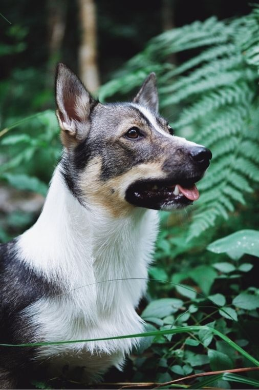

Kennel Kipinätassun
Kennel KipinätassunTervetuloa tutustumaan Kennel Kipinätassuun!

Olen Elina Juntura ja kasvatan länsigöötanmaanpystykorvia pienimuotoisesti Pirkkalan maaseudulla.
Länsigöötanmaanpystykorva
Länsigöötanmaanpystykorva on alkukantainen paimenkoirarotu, joka on kotoisin Ruotsista Länsi-Göötanmaalta. Göötit ovat olleet maatalojen monitoimikoiria: niitä on käytetty karjan paimentamiseen, pihavahteina sekä pienjyrsijöiden erossa pitoon. Tänä päivänä göötit löytävät useimmiten paikkansa aktiivisina seurakoirina. Pelkäksi sohvanlämmittäjiksi
gööteistä ei ole vaan ne tarvitsevat riittävästi liikuntaa ja etenkin aivotyöskentelyä ollakseen tyytyväisiä.
Tavoitteenani on kasvattaa rodunomaisia länsigöötanmaanpystykorvia ja haluan kasvatustyössäni kiinnittää erityisesti huomioita koirien terveyteen ja luonteeseen. Luustokuvaan kaikki koirani kattavasti ja toivon, että myös kasvattieni omistajat sitoutuvat samaan.